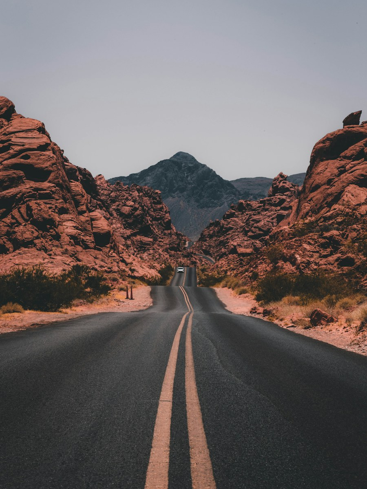

01 / ХӨРӨГ
ЗУРГИЙН ТЭМДЭГЛЭЛ · УЛААНБААТАР
Өдөр бүрт үлдэх нэг агшин.
Аялал, байгаль, хотын хэмнэл дундаас олж харсан жижигхэн түүхүүд.
Цомгийг үзэхСОНГОСОН АГШНУУД
Зургийн цомог
Карт бүрийн товчийг дарж арын түүхийг үзээрэй.

02 / АЯЛАЛ
Замын төгсгөлд
03 / ХОТ
Чимээгүй гудамж
04 / ӨГЛӨӨ
Шинэ эхлэл
05 / БАЙГАЛЬ
Түрлэгийн хэмнэл
06 / ОРОЙ
Цэнхэр цаг
ХӨДӨЛГӨӨНТ ДҮРС
Агшны цаана
Бичлэгийн тайлбар, гаднын медиа холбоосыг эндээс үзнэ.